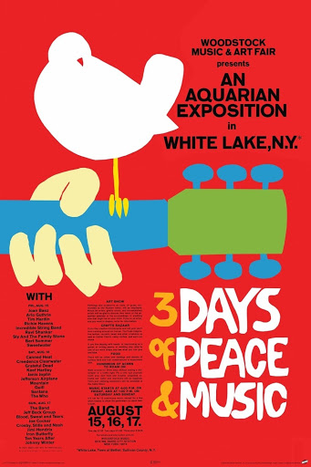

The idea
1969, August: 400,000 young people gathered in a muddy field in the state of New York, at a festival for Peace, Love and Music, changed the course of rock ‘n roll in an event that remains also to this days an indelible symbol of idealism. In the sixties, Woodstock became one of Rock's greatest myths, which stayed in our memories as “musical protest” in all possible interpretation.
"Though it's frequently portrayed as this crazy, unbridled festival of rain-soaked, stoned hippies dancing in the mud, Woodstock was obviously much more than that - or we wouldn't still be talking about it nowadays. People of all ages and colors came together in the fields of Max Yasgur's farm."

Original poster of the festival, 1969
WoodsLOD is a LOD project whose basic idea is not only to define Woodstock as the great epilogue of a generation of people who really believed they looked alike and that they could be equal under the umbrella of their own music. It is in fact also the ‘’echo’’ that was perpetuated in the next rock generation and was firmly rooted not only as a musical heritage but also as the stigma in the awareness of today's society.
We combined heterogeneous objects and entities, which at the first glance they have a minor, or even non existing relationship, and through LoD we revealed the strong underline association with our main event, and demonstrated our first speculation: that Woodstock was something more that just a bright example of music festival, it was a key moment for modern society.
Overview of the project
(Click here to download a full documentation of the process behind our project.)
The lack of homogeneity and interoperability in the use of meta-data standards for description by cultural institutions in the LAM domain is nowadays one of the biggest obstacles in the retrieval of information and resource connections in the web environment. Although some common methods and shared standards are now aiming at solving this situation, a real breakthrough would more probably be provided by the advent of the Semantic Web, that with its basis on the explicit semantic interconnection of uniquely identifiable resources, could allow, thanks to an extensive exploit of Linked Open Data, a shared and significant knowledge network.
This is the reason and the main goal of our project: an attempt in achieving an interconnected system of information about a complex historical event - in this case the Woodstock Music and Art Festival - starting from CH resources already existing on the web.
Firstly, we searched and chose 10 items from different holding institutions in the LAM domain, initially modelling their features and relationships through an intuitive natural-language based E/R model. Then we analysed the institutions involved and identified the meta-data standards that were used in the description of the objects, pointing out different categories, that were then compared in a meta-data alignment to highlight the similarities and bring to light the most important aspects in the description of our data.
Once we obtained a clearer idea of the domain, we proceeded to model our data on a more abstract level to formalize them. We built a theoretical model providing a more general natural-language description of the information about items and entities involved in our project, which represented an intermediate step leading up to the creation of a conceptual model, able to conceptualize our data and formalize a description of their features through the use of already existing ontology formal languages. Thanks to the employment of different ontologies we managed to represent and describe our data as formalized concepts usable express an RDF statement in the form of triplets composed by subjects, predicates and objects.
Finally, serializing our RDF statement through Turtle, we represented our data as URIs triplet expressed – where possible – through ontology vocabularies. We created interconnections between our data and authorities, other items or entities involved in our project and other resources from online repositories or already existent web pages. Last, we managed to represent the whole process results in a knowledge graph, depicting the contextualized information network of data related to our main historical event, shedding light on the hidden relationships that compose the real essence of knowing something.
WoodsLOD the Project